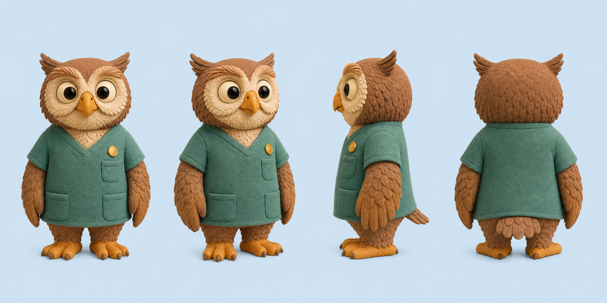
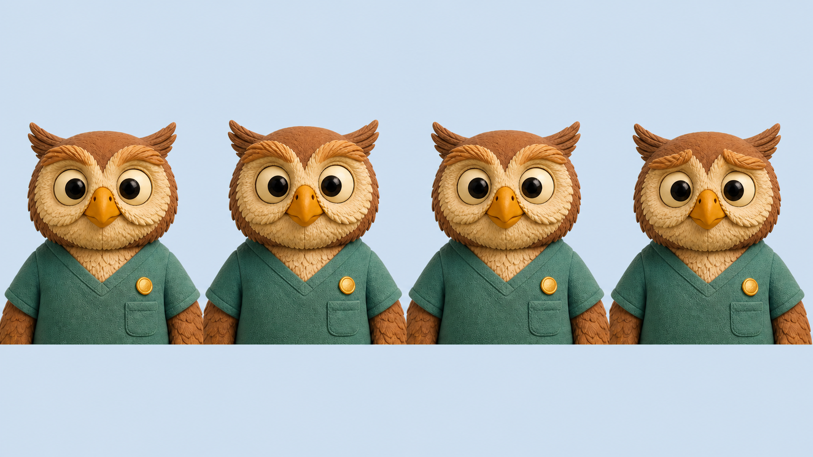
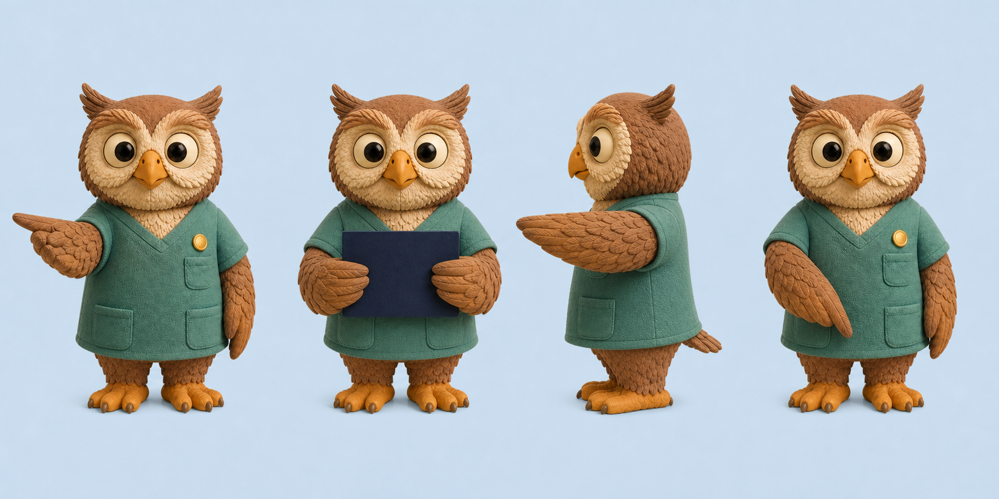
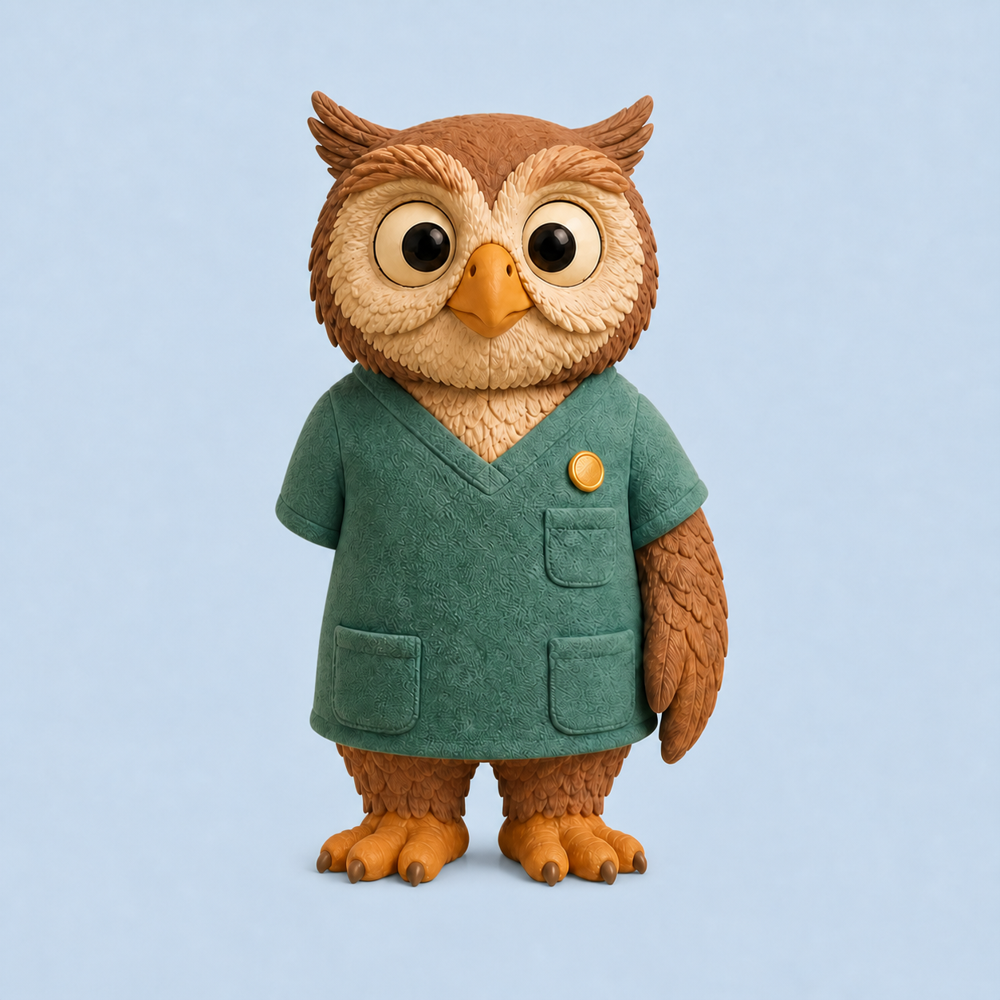
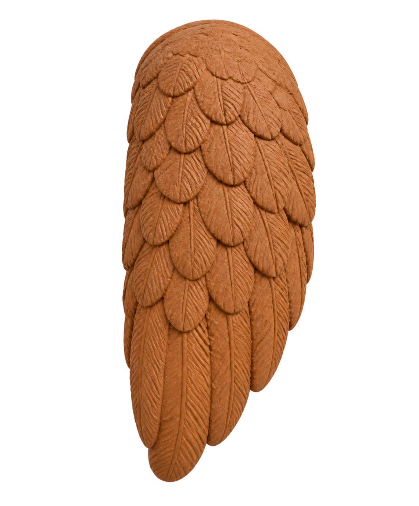

Character system · v1
One model, tested from every side
This page tests whether Dr. Hoots stays recognizable across views, expressions, gestures, and restrained motion. It contains no patient instructions.
01 · Identity
Turnaround
Front, three-quarter, profile, and back views establish the repeatable model before scene work begins.

Round silhouette, wide eye spacing, strong brow feathers.
Teal V-neck scrubs with one chest and two lower pockets.
One plain round gold pin. No logo or medical symbol.
Tactile clay feathers and fabric under neutral studio light.
02 · Expressions
Subtle, adult, and calm
Expression changes stay in the eyes and brows. They do not carry medical meaning.

03 · Gestures
Direct attention, do not explain
Each silhouette has one job: point, hold, stop, or direct attention. Clinical meaning belongs to text and diagrams.

04 · Motion test
One gesture, then rest
A layered clay rig isolates timing from generated-frame drift. It plays once only when requested and contains no clinical content.


Neutral → raise → point and hold → neutral.
4.8 seconds with a readable hold. It does not loop.
The clay base is one locked image. Head, eyes, beak, body, clothing, pin, feet, camera, texture, and light never change; only one transparent clay wing rotates.
The same button toggles between the two static poses instead of animating.
None. Captions and a transcript are not applicable to this silent identity test.
Static equivalent: the corrected gesture sheet above shows both the resting model and the complete closed-wing point. The motion adds no meaning.
05 · Records
Generation and review status
The complete prompts, source paths, file hashes, and review decisions live in the asset manifest.
Turnaround + expressions
Status: design gate passed
assets/character/manifest.json
Gestures v3
Status: design gate passed
assets/character/dr-hoots-gestures-v3.png
Clay motion rig v4
Status: design gate passed
character-exploration.html#motion